UG
Steer toward lower uncertainty
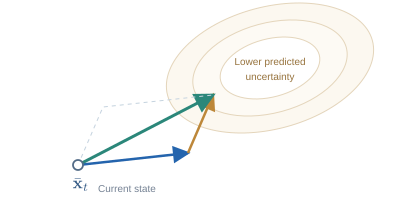
Define a function f that favors lower velocity variance, then add its state gradient to the mean velocity. The scale 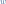 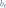
UNCERTAINTY-AWARE FLOW MATCHING
Massachusetts Institute of Technology
Despite the remarkable success of sampling-based generative models such as flow matching, they can still produce samples of inconsistent or degraded quality. To assess sample reliability and improve sample fidelity, we propose uncertainty-aware flow matching (UA-Flow), a lightweight extension of flow matching that predicts the velocity field together with heteroscedastic uncertainty. UA-Flow estimates spatially localized sample uncertainty by propagating velocity uncertainty through the flow dynamics. The resulting estimates serve as reliability signals that reflect data-manifold support for each generated sample or region. We further use them to steer generation via uncertainty-aware guidance (UG) and uncertainty-aware classifier-free guidance (UCFG). Experiments on ImageNet and CIFAR-10 show that UA-Flow’s uncertainty tracks sample fidelity more consistently than element-wise baselines and that these signals also carry information about data-manifold support. On ImageNet, UG increases precision at the cost of recall and improves FID, while UCFG maintains lower FID than CFG at large guidance scales.
THE METHOD
UA-Flow predicts a velocity mean and heteroscedastic variance.
QUANTIFY & ASSESS
A lightweight variance head predicts heteroscedastic velocity uncertainty. Propagating it through deterministic flow dynamics yields a spatial uncertainty map for each generated sample.
Velocity mean and variance
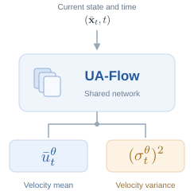
Track the mean and its uncertainty together
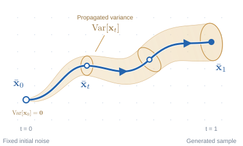
An image and a spatial reliability signal
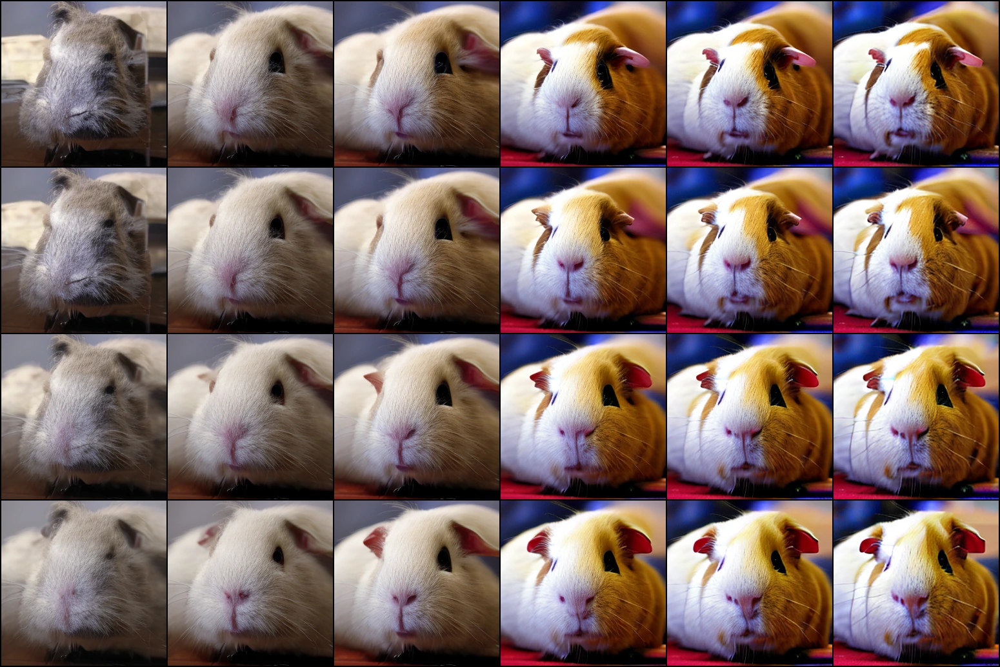
Sample
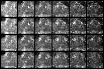
Uncertainty
Brighter regions = higher uncertainty
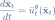
Sample scoring. Aggregate endpoint uncertainty to rank and filter generated samples, or retain the map to localize uncertain regions. UA-Flow can be fine-tuned from a pretrained flow matching model.
GUIDE DURING SAMPLING
Use the predicted velocity uncertainty at the current state to modify sampling. UG steers the trajectory; UCFG adapts the strength of classifier-free guidance.

Define a function f that favors lower velocity variance, then add its state gradient to the mean velocity. The scale  
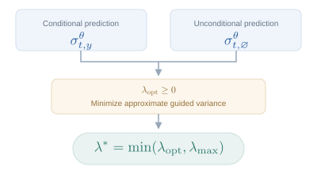
Choose to minimize the approximate variance of the extrapolated velocity. Cap it at , adapting the CFG scale to the predicted conditional and unconditional uncertainties.
Using UG + UCFG together. UCFG first sets the guided velocity mean and variance. UG then adds a gradient correction computed from that guided variance. The vector diagram is schematic.
Uncertainty maps from UA-Flow, AU (De Vita & Belagiannis, 2025), and BayesDiff (Kou et al., 2024).
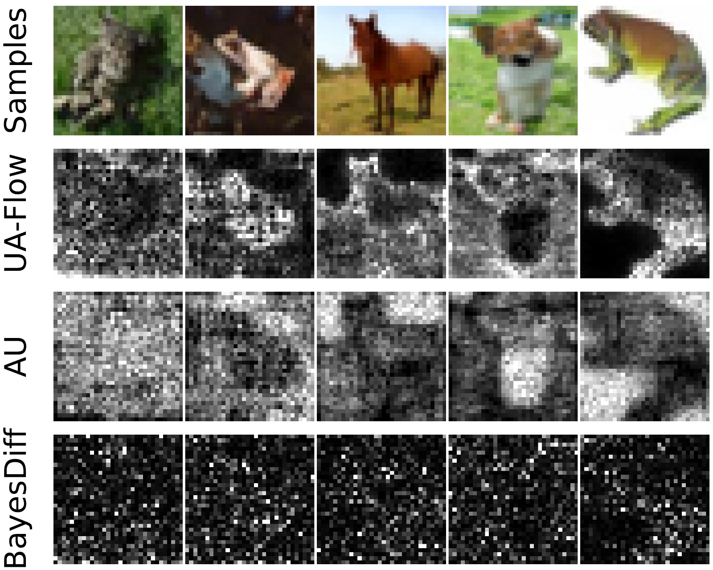
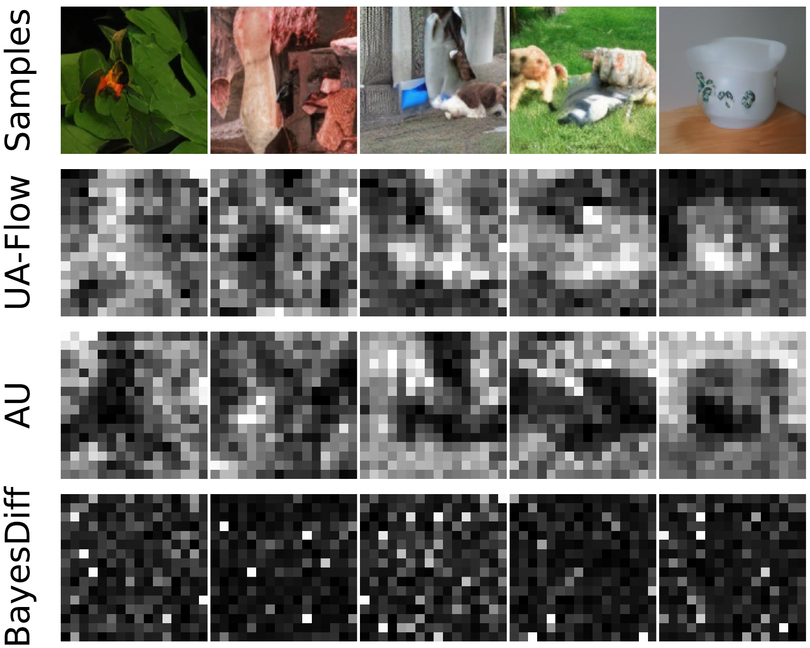
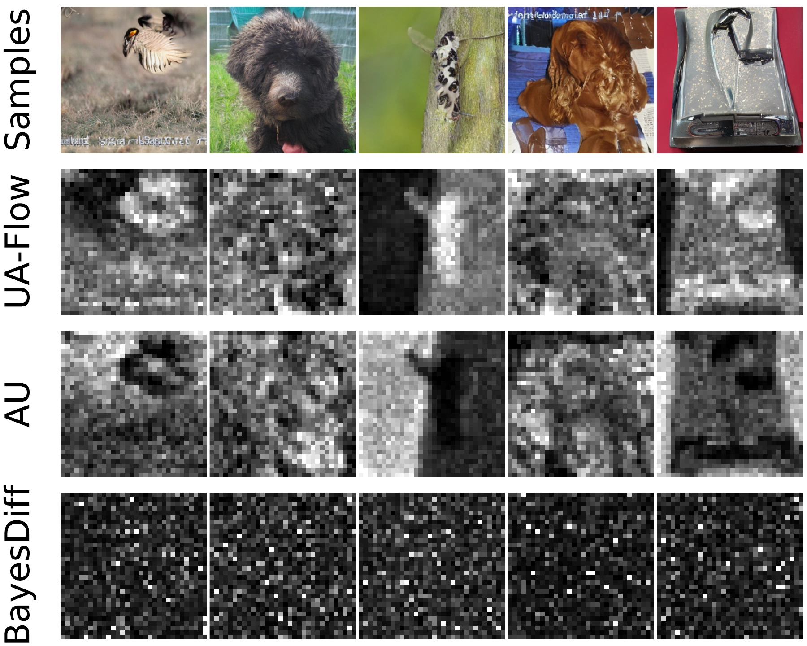
Scroll horizontally to compare the three datasets.
EXPLORE THE SAMPLES
Adjust the guidance scales to compare generated images and their uncertainty.
Guidance settings
UG steers toward lower predicted uncertainty. UCFG adapts the classifier-free guidance scale, bounded by λmax.
Guinea pig · UG 30 · Maximum UCFG 2
Viewer of precomputed ImageNet-256 experiments; each example uses a fixed initial noise seed.
Uncertainty is shown in latent space. These maps visualize predicted uncertainty, not measured image error.
EXPERIMENTAL RESULTS
Evaluated on CIFAR-10, ImageNet-128, and ImageNet-256.
Removing the most uncertain samples improves FID and precision on ImageNet. UA-Flow gives a more consistent fidelity signal than element-wise uncertainty baselines, while CLIP-space aggregation is competitive with GenUnc (Jazbec et al., 2025) at lower computational cost.
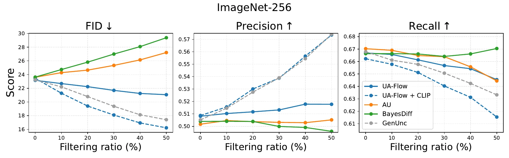
Fixed classifier-free guidance can degrade at large scales. UCFG selects a scale from predicted uncertainty at each step, improving the best FID over CFG and limiting degradation as the guidance cap increases.
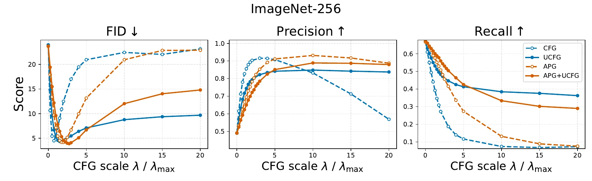
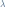
for CFG/APG, or the adaptive-scale cap for UCFG variants.| Method | ImageNet-128 FID ↓ | ImageNet-256 FID ↓ |
|---|---|---|
| CFG | 5.26 ± 0.03 | 4.48 ± 0.01 |
| UCFG | 4.82 ± 0.04 | 4.30 ± 0.01 |
| APG | 5.06 ± 0.02 | 4.18 ± 0.01 |
| APG + UCFG | 4.78 ± 0.01 | 3.98 ± 0.07 |
Each method is evaluated at its own lowest-FID guidance setting. Results and figures follow the local manuscript; see the paper for experimental details. Filtering and UG induce a fidelity–diversity tradeoff; FID gains are not universal across datasets.
@article{han2026uaflow,
title = {Flow Matching with Uncertainty Quantification and Guidance},
author = {Juyeop Han and Lukas Lao Beyer and Sertac Karaman},
journal = {arXiv preprint arXiv:2602.10326},
year = {2026}
}